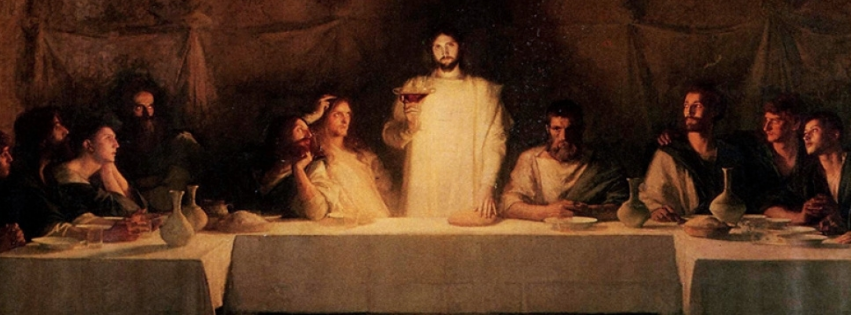

耶穌在被抓之前，和祂的門徒一起吃逾越節的晚餐，耶穌透過這個晚餐，再一次預告祂將要被殺害而死。
路加福音22:14-20記載
耶穌在被抓之前，和祂的門徒一起吃逾越節的晚餐，耶穌透過這個晚餐，再一次預告祂將要被殺害而死。
這個晚餐，被稱作主的晚餐，後來教會也按照耶穌在這晚餐所做的，舉行聖餐。
在主的晚餐中
耶穌將餅擘開，餅象徵著耶穌的身體，擘開餅象徵耶穌的身體為我們受苦；
在主的晚餐中，耶穌拿起葡萄汁，宣告這是祂的血，意思是這紅色的葡萄汁，象徵耶穌為我們流血、犧牲生命。
在聖餐中
我們要想起、紀念耶穌為我們受苦、受鞭打、被釘十字架，流血為我們犧牲自己。在這樣的紀念中，我們向耶穌獻上感恩。
然而
我們不只要自己接受耶穌的恩典、領受耶穌的祝福， 也要效法耶穌的榜樣，願意給予別人、祝福別人。
當我們這麼做，我們就讓別人從我們的身上經歷耶穌的愛和祝福，讓其他人透過我們來認識耶穌。
Fixed Text